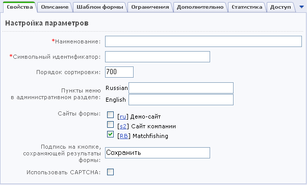
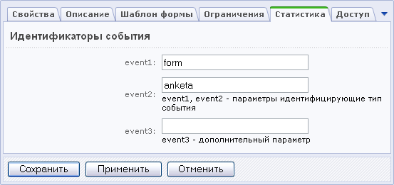

Для создании новой веб-формы в упрощённом режиме необходимо выполнить следующее:
- Перейдите на страницу настроек модуля Веб-формы: Настройки > Настройки продукта > Настройки модулей.
- Установите флаг в поле Использовать упрощённый режим редактирования форм и нажмите кнопку Сохранить.
- Откройте список форм в Административном разделе (Сервисы > Веб-формы > Настройка форм).
- Нажмите кнопку Создать.
- В поле Наименование введите название новой веб-формы.
- В поле Символьный индикатор введите
- Укажите порядок сортировки (порядок показа веб-форм в списке). Чем большее значение вы укажете, тем ниже в списке будет показана данная веб-форма.
- Создайте названия пунктов меню для административного раздела сайта, ведущих к таблице результатов веб-формы.
- Выберите сайт (сайты), на котором будет показана веб-форма.
- Если вы хотите, чтобы результаты заполнения веб-формы отправлялись на определённый адрес, установите флаг в поле "Отправлять результаты по email". Почтовый шаблон, с использованием которого будут отсылаться сообщения, будет сгенерирован автоматически после сохранения формы.
Ссылка "Список шаблонов" позволяет перейти к списку созданных шаблонов. При необходимости вы можете изменить созданный шаблон.
- Укажите текст, который будет выводиться на кнопке для отправки результатов веб-формы (например, Сохранить или Отправить).
- Для защиты от автоматического заполнения формы отметьте опцию Использовать CAPTCHA..

- Перейдите на закладку Описание.
- Загрузите изображение с локального компьютера. Изображение будет показано в публичной части рядом с названием и описанием формы.
- Введите описание веб-формы. Описание может быть в виде обычного текста или HTML-кода.
- На закладке "Шаблон формы" вы можете создать свой шаблон веб-формы или же использовать шаблон по умолчанию.
- Для того чтобы добавить ограничения на результаты заполнения форм, перейдите на закладку "Ограничения". Отметьте опцию "Использовать ограничения" и задайте параметры "Максимальное количество результатов от пользователя" и "Минимальный промежуток времени между результатами".
- У вас есть возможность отразить факты заполнения и сохранения форм в модуле статистики через механизм регистрации событий, позволяющий, помимо всего прочего, проследить динамику активности заполнения формы по дням и построить соответствующий график. Для этого перейдите на закладку "Статистика" и задайте идентификаторы типа события для модуля статистики.

- Откройте закладку "Доступ".
- Настройте права доступа групп пользователей на работу с данной веб-формой. Вы можете назначить следующие права доступа:
- доступ закрыт;
- заполнение формы;
- просмотр и изменение своих результатов;
- просмотр параметров формы;
- полный доступ.
- Нажмите кнопку "Сохранить", чтобы добавить новую веб-форму и вернуться на список форм, кнопку "Применить", чтобы сохранить изменения и остаться на странице редактирования веб-формы. Чтобы очистить все заполненные поля, нажмите кнопку "Отменить".
После создания формы вы можете приступить созданию и настройке вопросов веб-формы.